01: Le fil réel
0 à 3,75 s
Image 0 complète : le titre est posé ; le fil réel de la Communauté défile (Anna Kovacs, Antoine Chastel, Chloé Fontan…), deux écrans qui glissent.
À lire « Là où la carte se termine. » (0-3,5 s)
Son piste calme ; tic de défilement
Source `/communaute`, compte démo de Léa (capture du 16/11)
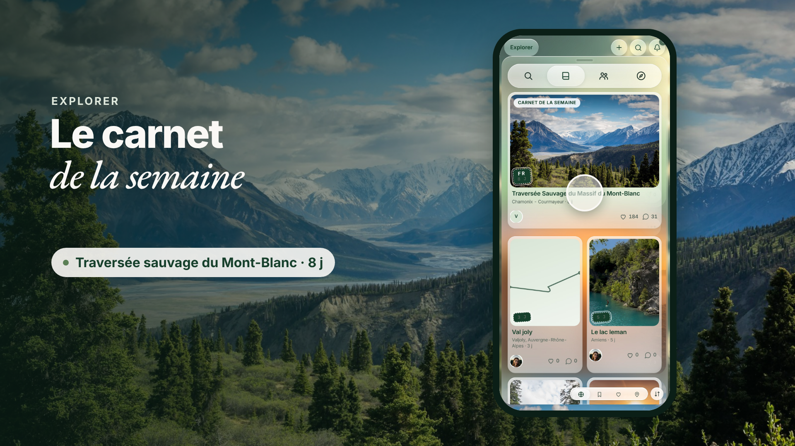
02: Le pouce réel
3,75 à 5,62 s
RIME 1 : dans Explorer de la Communauté, le pouce de Léa touche le « Carnet de la semaine ».
À lire « Carnet de la semaine » (0,2-1,0 s) ; le tap (1,3 s)
Son tap
Source `/communaute` › Explorer › Carnets
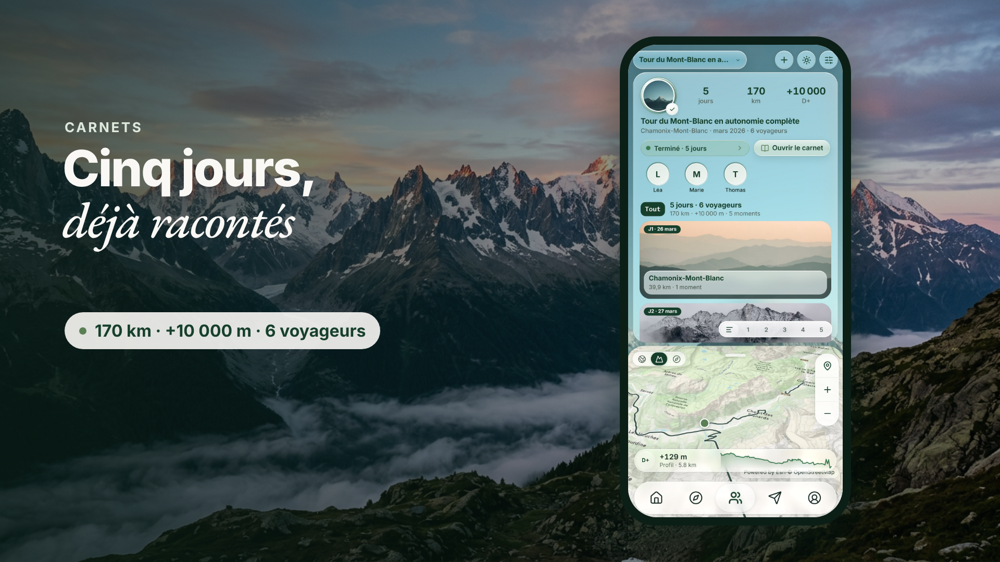
03: Le carnet réel
5,62 à 7,5 s
Un carnet de la cordée : Tour du Mont-Blanc, Léa, Marie, Thomas ; jours, carte et profil. L'envie de repartir.
À lire « 6 voyageurs » (0,2-1,8 s)
Son whoosh doux
Source `/carnets/749e9e8c…` (Tour du Mont-Blanc en autonomie complète)
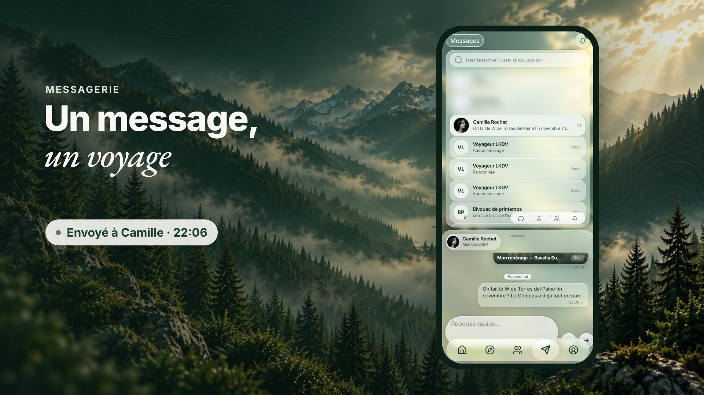
04: « On le fait ? » réel
7,5 à 9,38 s
Dans /messagerie, Léa écrit à Camille : « On fait le W de Torres del Paine fin novembre ? Le Compas a déjà tout préparé. » (message réellement envoyé ; la liste des conversations reste hors cadre).
À lire le message (0,2-1,8 s)
Son son d'envoi
Source `/messagerie` (capture + vidéo `assets/app/video/messagerie-w.mp4`)
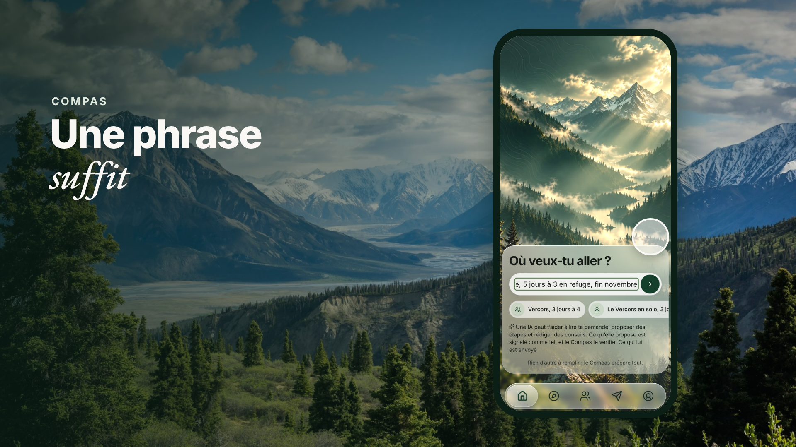
05: La phrase réel
9,38 à 11,25 s
Le Compas vide : « Le W de Torres del Paine, 5 jours à 3 en refuge, fin novembre » ; le pouce touche la flèche ; au clic (11,1 s) l'écran s'ouvre sur le globe, la piste s'ouvre avec lui (11,25 s).
À lire la phrase (0,1-1,3 s) ; le clic (1,6 s)
Son frappe ; clic ; la piste s'ouvre
Source `/compas?nouvelle=1` (vidéo `assets/app/video/compas-creation-w.mp4`)
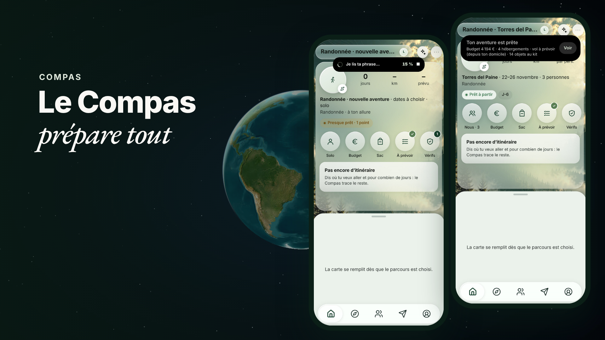
06: Ton aventure est prête réel
11,25 à 13,12 s
Pendant la plongée satellite vers la Patagonie : « Je lis ta phrase… 15 % » puis « Ton aventure est prête · Budget 4 194 € · 4 hébergements · 14 objets au kit ».
À lire « Je lis ta phrase » (0,1-0,7 s) ; « Ton aventure est prête » (0,7-1,8 s)
Son pop
Source préparation visible du Compas (`CompasPrep`) ; vol satellite cuit `assets/map/w-patagonie.mp4`

07: Le W réel
13,12 à 16,88 s
La plongée se pose sur la vraie carte satellite ; à l'écran, le parcours du Compas : Refugio Chileno → Hostería Pehoé → Villa Monzino ; puis la fiche du jour 2 (36,2 km, +642 m, photo libre du refuge).
À lire le tracé (0-2,0 s) ; « Jour 2 · 36,2 km » (2,0-3,7 s)
Son un pop par étape sur les temps
Source Compas, carte « Satellite » agrandie + fiche jour (Esri, OpenStreetMap, photos CC)
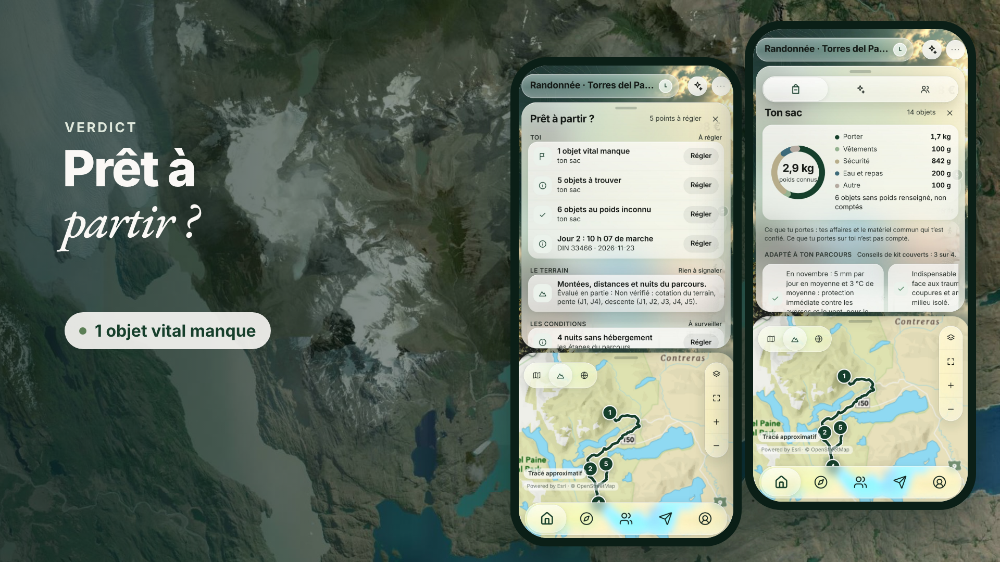
08: Ce qui manque réel
16,88 à 18,75 s
« Prêt à partir ? · 1 objet vital manque » ; le sac du voyage, 2,9 kg connus, 14 objets, conseils adaptés au parcours.
À lire « 1 objet vital manque » (0,2-1,8 s)
Son tic
Source Compas › Vérifs et Sac
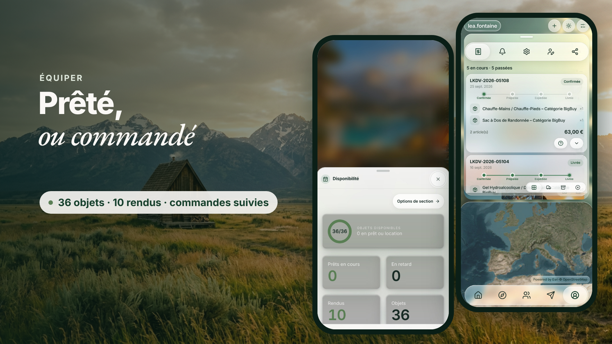
09: Prêts et boutique réel
18,75 à 20,62 s
La disponibilité du matériel (prêts en cours, rendus) et les commandes de la boutique, suivies jusqu'à la livraison.
À lire « Prêts en cours » (0,2-0,9 s) ; « Livrée » (0,9-1,8 s)
Son clic
Source `/hub/disponibilite` ; `/compte` › Commandes

10: Kit Studio réel
20,62 à 24,38 s
TEMPS FORT 1 : le vrai sac 3D, ses modules montés sur les temps (couvercle, poche avant, poches latérales), puis les corps de 45 à 80 L.
À lire « Ton sac, pièce par pièce » (0,4-1,6 s) ; les modules (1,9-3,7 s)
Son whoosh ; clics sur les temps
Source `/kit-studio` (maillages réels .glb)
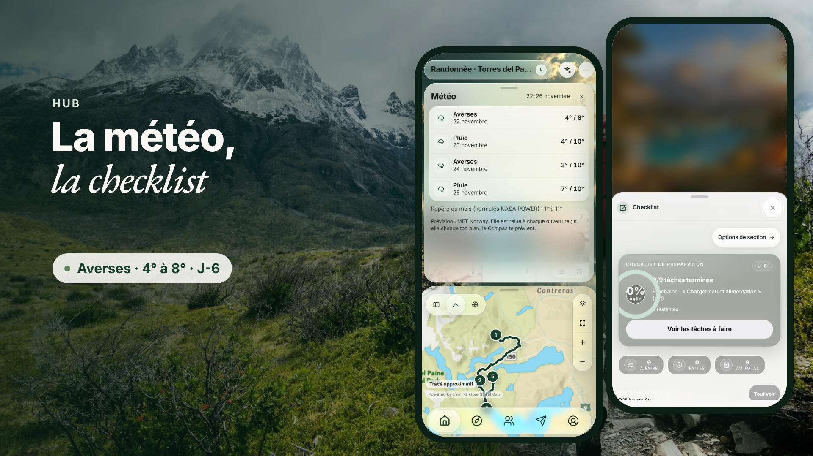
11: J-6 réel
24,38 à 26,25 s
La vraie prévision MET Norway du 22 au 26 novembre à Torres del Paine, et la checklist du départ (J-6).
À lire « Averses 22 novembre » (0,2-1,8 s)
Son pluie légère
Source Compas › Météo (MET Norway, NASA POWER) ; `/hub/checklist`
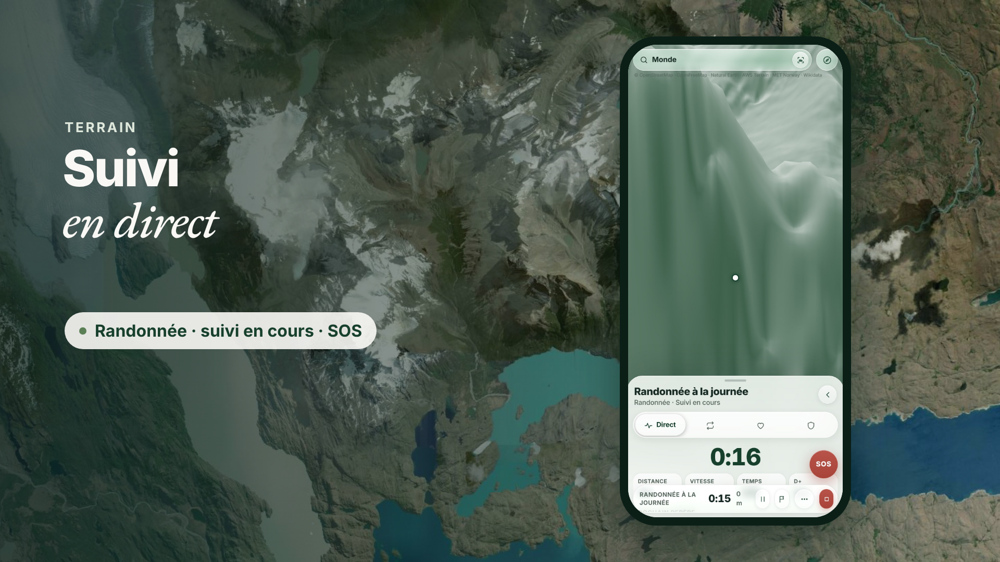
12: En direct réel
26,25 à 28,12 s
« Démarrer » › Randonnée à la journée : chrono, distance, vitesse, SOS à portée de pouce.
À lire le chrono (0,2-1,8 s)
Son bip de départ
Source `/explorer` › Démarrer
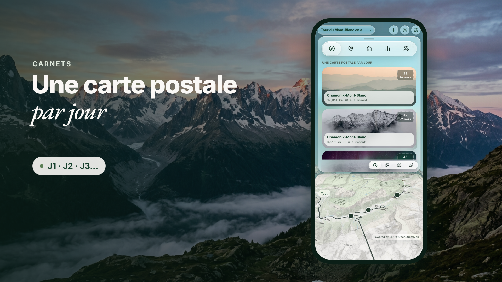
13: Le carnet s'écrit réel
28,12 à 30 s
Le carnet se remplit jour après jour, une carte postale par jour, à plusieurs auteurs.
À lire « Une carte postale par jour » (0,2-1,8 s)
Son pop par jour
Source carnet collaboratif (fil de bord)
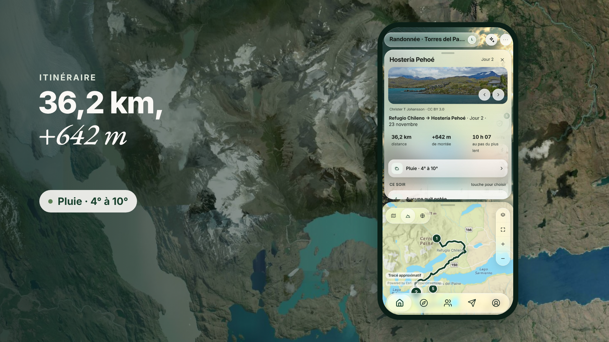
14: Le jour 2 réel
30 à 31,88 s
La grosse étape : la fiche du jour 2 annonce pluie, 36,2 km et 10 h 07 au pas du plus lent. Le groupe s'organise.
À lire « au pas du plus lent » (0,2-1,8 s)
Son vent
Source Compas › fiche jour
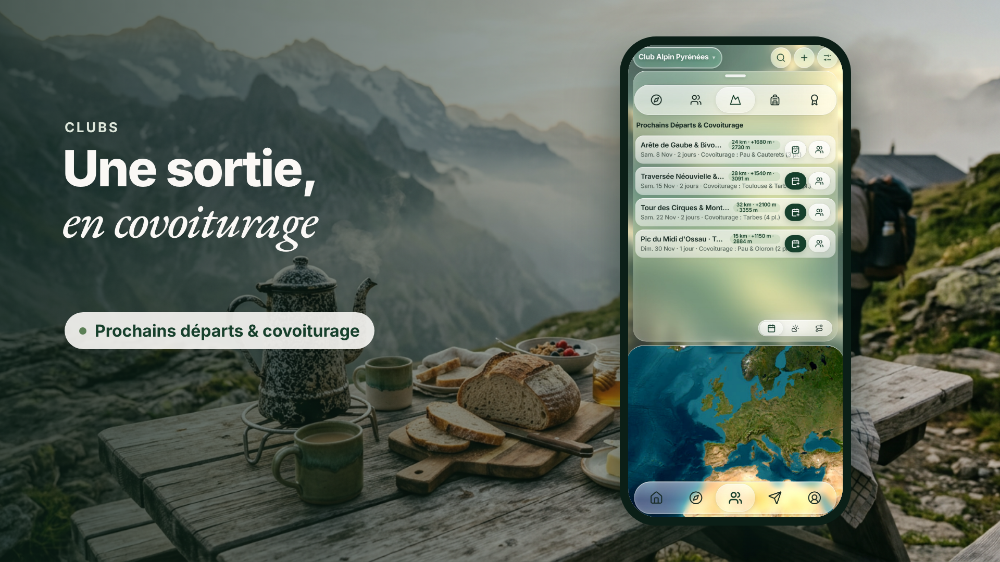
15: Le club réel
31,88 à 33,75 s
Un club propose ses prochains départs, avec covoiturage ; on s'y joint. Dernière demi-mesure : silence, le vent seul.
À lire « Prochains départs » (0,2-1,4 s)
Son clic ; demi-mesure de silence (vent)
Source `/clubs/…` › Sorties (Club Alpin Pyrénées)

16: Le lever de soleil réel
33,75 à 39,38 s
TEMPS FORT 2 : la musique repart, pleine ; plein cadre sur la photo, puis elle se range dans un post de la Communauté.
À lire la photo (0-2,0 s) ; le post (2,0-5,6 s)
Son la musique repart, pleine
Source photo de l'app (`assets/img`) ; post réel de la Communauté
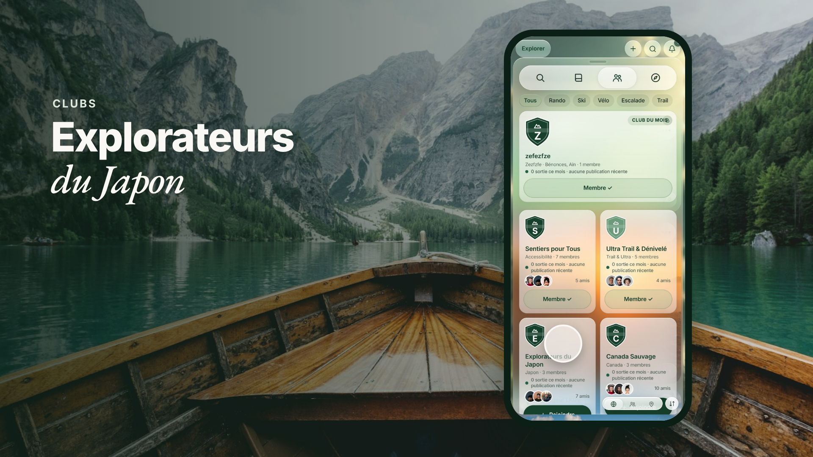
17: À l'autre bout du monde réel
39,38 à 41,25 s
RIME 2 : à l'autre bout du monde, un membre du club « Explorateurs du Japon » tombe sur le récit.
À lire « Explorateurs du Japon » (0,4-1,8 s)
Son tap
Source `/communaute` › Explorer › Clubs
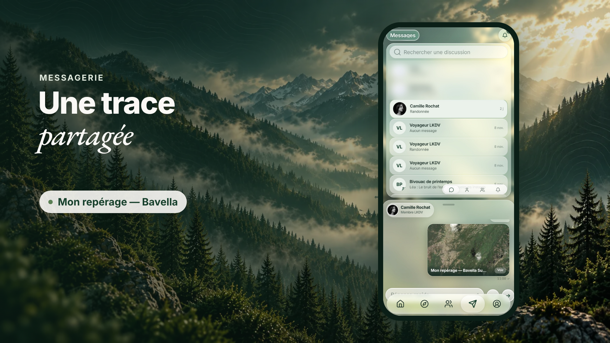
18: Le partage réel
41,25 à 43,12 s
Dans la messagerie, une trace se partage d'un voyageur à l'autre.
À lire la trace (0,2-1,8 s)
Son son de message
Source `/messagerie` (conversation avec Camille)
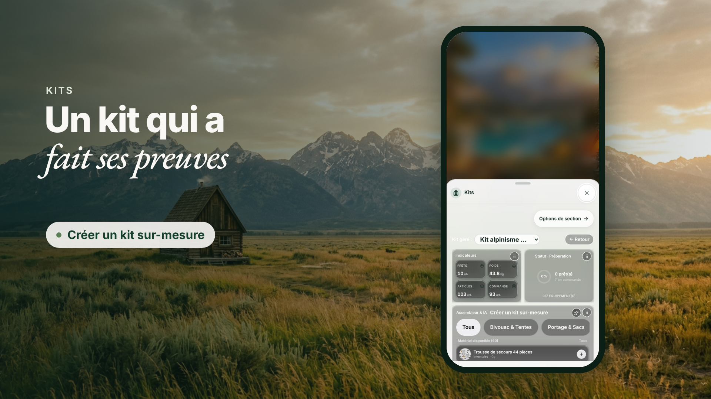
19: Les kits réel
43,12 à 45 s
Les kits : indicateurs, matériel disponible, « Créer un kit sur-mesure ».
À lire « Kit alpinisme » (0,2-1,8 s)
Son pop
Source `/hub/kit`

20: Sa version réel
45 à 46,88 s
Dans le Kit Studio, le même sac en 45, 60 ou 80 L : chacun sa version.
À lire « LKDV ONE 60 L » (0,4-1,8 s)
Son clic
Source `/kit-studio` › Apparence › Corps (le coloris « Nuit » a renvoyé « Non enregistré · réessaie » en production : à corriger avant de le filmer)
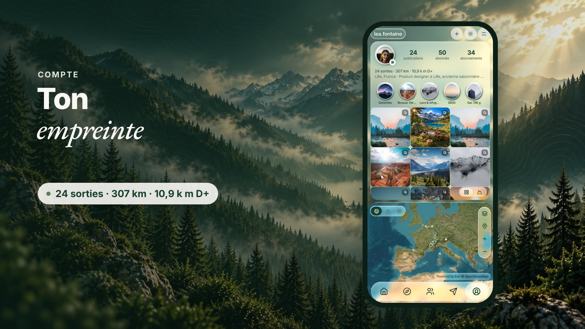
21: L'empreinte réel
46,88 à 48,75 s
Le profil de Léa : sorties, kilomètres, albums, carte de ses massifs.
À lire « 24 sorties » (0,2-1,8 s)
Son son de notification
Source `/compte`
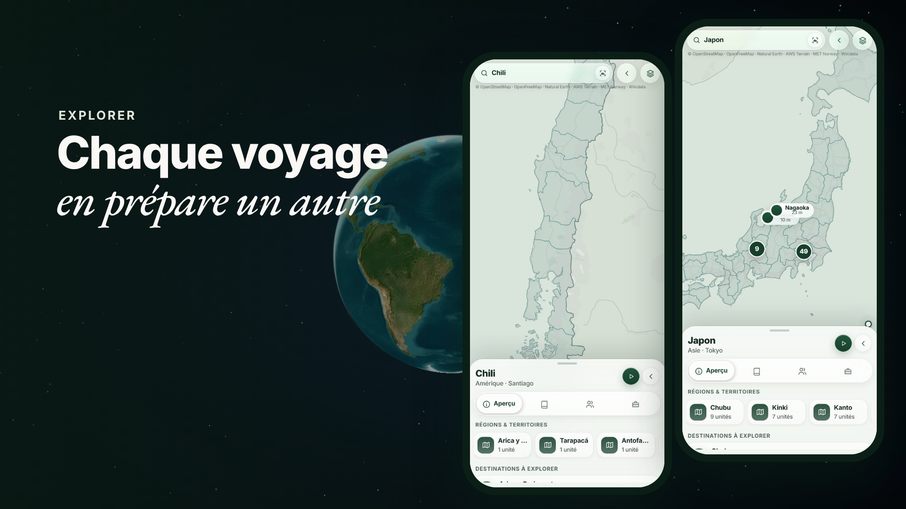
22: Chili · Japon réel
48,75 à 54,38 s
Explorer : le Chili, puis le Japon et ses régions ; le globe tourne d'un voyage à l'autre.
À lire « Chaque voyage » (0,4-1,8 s) ; « en prépare un autre » (1,8-5,6 s)
Son montée
Source `/explorer` › Chili, Japon

23: LKDV réel
54,38 à 60 s
Le badge arrive comme une boussole qui se cale ; « Le Kit du Voyageur » ; « Préparer · Explorer · Partager ». Adresse et stores seulement s'ils sont confirmés.
À lire le badge (0-1,0 s) ; le nom (1,0-2,5 s) ; l'adresse (2,5-5,6 s)
Son impact sous le badge ; fondu 1,5 s
Source `public/logo.png` ; adresse et stores à confirmer avant rendu